Tema 4: Aritmètica entera i matrius
4.1 Suma, resta i canvi de signe
Les instruccions de suma (add) i resta (sub) d’enters ja s’han introduït a RISC-V 2.11; aquí se’n reprèn l’ús per estudiar-ne el sobreeiximent i per definir el canvi de signe.
neg (canvi de signe)
El canvi de signe d’un registre s’obté amb la pseudoinstrucció neg:
| Pseudoinstrucció | Operació | Expansió |
|---|---|---|
neg rd, rs |
\(rd \leftarrow -rs\) | sub rd, x0, rs |
Gràcies a l’equivalència entre la resta i la suma amb el negatiu del subtrahend, el maquinari necessita un sol circuit per a la suma i la resta (Secció 1.6.3).
4.2 Sobreeiximent en suma i resta d’enters
El rang de representació dels enters en Ca2 (Secció 1.5.1) amb \(n\) bits és \([-2^{n-1},\ 2^{n-1}-1]\) (Equació 1.3). Es produeix sobreeiximent (overflow) en una operació quan el resultat exacte no pertany a aquest rang; en aquest cas, el resultat calculat amb \(n\) bits no és correcte.
La necessitat de detectar el sobreeiximent depèn del llenguatge d’alt nivell. En llenguatges com Fortran o Ada, quan la suma o resta d’enters produeix overflow el programa ha de llançar una excepció, mentre que els overflows de naturals han de ser ignorats. En canvi, llenguatges com C estipulen que tots els overflows siguin ignorats (per als naturals el resultat es trunca a mòdul \(2^n\), i per als enters el resultat és indefinit).
Pel que fa al maquinari, alguns processadors ofereixen suport per detectar el sobreeiximent (mitjançant indicadors o instruccions específiques). D’altres no, i en aquest cas la detecció és responsabilitat del programari (com en el cas de RV32I).
A RV32I, les operacions de suma i resta ignoren el sobreeiximent: el resultat és simplement els 32 bits de menys pes de l’operació, independentment de si és correcte en el rang dels enters representables.
4.2.1 Condicions de sobreeiximent
Per a la suma \(s = a + b\), es produeix sobreeiximent si i només si els dos operands són del mateix signe i el resultat és de signe diferent.
Per a la diferència \(d = a - b\), es produeix sobreeiximent si i només si la diferència és del mateix signe que el subtrahend \(b\) però de signe diferent que el minuend \(a\).
Considerem la suma exacta \(s = a + b\), on \(a\) i \(b\) estan representats per les cadenes de bits \(A = A_{n-1}\ldots A_0\) i \(B = B_{n-1}\ldots B_0\). La suma exacta sempre es pot representar amb \(n+1\) bits com \(S = S_n\,S_{n-1}\ldots S_0\).
Cas 1 — Signes oposats: si \(a < 0\) i \(b \geq 0\), llavors \(a \leq a+b < b\), de manera que \(s\) sempre és representable amb \(n\) bits. No hi ha sobreeiximent.
Cas 2 — Mateix signe: la suma exacta ha de ser del mateix signe que els operands, de manera que \(S_n = A_{n-1} = B_{n-1}\). La cadena truncada \(S' = S_{n-1}\ldots S_0\) és la representació correcta de \(s\) si i només si \(S_{n-1} = S_n\), és a dir, si \(S_{n-1} = A_{n-1} = B_{n-1}\). Si \(S_{n-1} \neq A_{n-1}\), el resultat truncat és incorrecte: hi ha sobreeiximent.
Per a la diferència \(d = a - b\), es pot aplicar la mateixa regla a l’expressió \(a = d + b\).
4.2.2 Detecció del sobreeiximent per maquinari
En un sumador amb propagació d’arrossegament (carry) de \(n\) bits, es produeix sobreeiximent quan l’arrossegament d’entrada al bit de més pes difereix de l’arrossegament de sortida:
\[ v = c_{n-1} \oplus c_n \tag{4.1}\]
Un sumador de \(n\) bits es construeix amb una cadena de \(n\) sumadors complets (full-adders). Cada sumador complet rep el bit \(a_i\), el bit \(b_i\) i el bit d’arrossegament d’entrada (carry-in) \(c_i\), i produeix el bit de suma \(s_i = a_i \oplus b_i \oplus c_i\) i el bit d’arrossegament de sortida (carry-out) \(c_{i+1} = (a_i \oplus b_i) \land c_i \lor a_i \land b_i\).
Al darrer sumador complet (bit de més pes), el carry-in és \(c_{n-1}\) i el carry-out és \(c_n\). El sobreeiximent es detecta amb una sola porta lògica afegida al darrer sumador: \(v = c_{n-1} \oplus c_n\).
4.2.3 Detecció del sobreeiximent per programari
Donada la suma \(s = a + b\) d’enters de 32 bits, la condició de sobreeiximent és:
\[ v = \overline{(A_{31} \oplus B_{31})} \land (A_{31} \oplus S_{31}) \tag{4.2}\]
és a dir, sobreeiximent si els operands tenen el mateix signe i el resultat té signe diferent.
Suposant que els enters a, b, s estan a t0, t1, t2, i que s’ha executat add t2, t0, t1:
RV32I
xor t3, t0, t1 # A xor B (bit 31: 0 si mateix signe)
not t3, t3 # ~(A xor B), vegeu @nte-pseudoinstruccio-not
xor t4, t0, t2 # A xor S (bit 31: 1 si signes diferents)
and t3, t3, t4 # condició de sobreeiximent als 32 bits
srli t3, t3, 31 # desplaça bit 31 a la posició 0
# t3 = 1 si sobreeiximent, 0 si noEl criteri vist per a la suma i la resta (Essencial 4.1) s’aplica a tota l’aritmètica entera de RISC-V, inclosa l’extensió M: el resultat es trunca silenciosament als 32 bits de menys pes, sense excepció ni indicador. La detecció, si cal, és responsabilitat del programari (Secció 4.2.3).
Per als naturals, el rang de representació amb \(n\) bits és \([0,\ 2^n-1]\), i es produeix sobreeiximent quan el resultat exacte supera aquest rang. La condició és més simple que en el cas dels enters: en un sumador amb propagació d’arrossegament, n’hi ha prou d’observar l’arrossegament de sortida del bit de més pes (\(c_n = 1\)). Per detectar-lo per programari, n’hi ha prou de comparar el resultat amb qualsevol dels dos operands: si la suma ha produït sobreeiximent, el resultat serà necessàriament menor que cadascun dels operands (ja que s’ha “donat la volta” al rang).
En llenguatges com C, l’estàndard especifica que el sobreeiximent de naturals produeix un truncament a mòdul \(2^n\) (wrapping around). Per a tipus de dades de menys de 32 bits, el compilador ha de generar instruccions addicionals per truncar el resultat al rang corresponent.
4.3 Multiplicació entera
4.3.1 Algorisme
L’algorisme de multiplicació entera es basa en el mateix principi que la multiplicació manual: calcular productes parcials i acumular-los. Per a enters amb signe, es treballa amb els valors absoluts i s’ajusta el signe del resultat al final.
L’algorisme per calcular el producte \(z = x \times y\) d’enters és:
- Calcular els valors absoluts \(|x|\) i \(|y|\).
- Multiplicar els valors absoluts (producte de naturals).
- Si els operands tenen signes diferents, canviar el signe del resultat.
Per multiplicar dos naturals en base 2, s’obtenen tants productes parcials com bits té el multiplicador: el producte parcial \(i\) és el multiplicand desplaçat \(i\) posicions a l’esquerra si el bit \(i\) del multiplicador és 1, o zero si és 0. La suma de tots els productes parcials és el resultat.
Multiplicar \(x = 1010_2\) (\(10_{10}\)) per \(y = 1101_2\) (\(13_{10}\)):
4.3.2 Circuit seqüencial de multiplicació
Per evitar guardar tots els productes parcials simultàniament, el circuit els va acumulant a mesura que es calculen en un registre acumulador P de \(2n\) bits, inicialitzat a zero.
El circuit disposa de tres registres:
- MD (\(2n\) bits): conté el multiplicand, inicialitzat amb \(x\) a la part baixa i zeros a la part alta. Es desplaça una posició a l’esquerra a cada iteració.
- MR (\(n\) bits): conté el multiplicador \(y\). Es desplaça una posició a la dreta a cada iteració; el bit de menys pes s’usa per decidir si sumar o no.
- P (\(2n\) bits): acumulador del producte. S’inicialitza a zero i s’hi suma MD si el bit de menys pes de MR és 1.
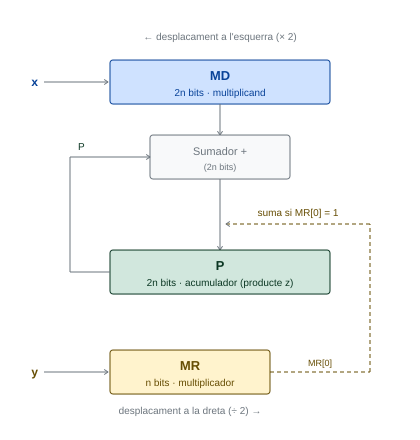
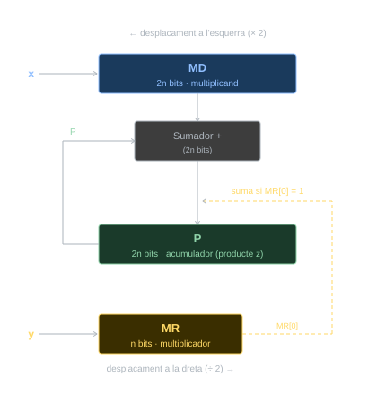
Algorisme 4.1 Multiplicació seqüencial de naturals de \(n\) bits, on \(x\) multiplicand, \(y\) multiplicador i \(z\) el resultat.
Multiplicar \(x = 1010_2\) per \(y = 1101_2\):
| Iteració | P (acumulador) | MD (multiplicand) | MR (multiplicador) |
|---|---|---|---|
| inicial | 0000 0000 |
0000 1010 |
1101 |
| 1 | 0000 1010 |
0001 0100 |
0110 |
| 2 | 0000 1010 |
0010 1000 |
0011 |
| 3 | 0011 0010 |
0101 0000 |
0001 |
| 4 | 1000 0010 |
1010 0000 |
0000 |
Resultat: \(P = 10000010_2 = 130_{10}\) ✓
Aquest circuit tarda un mínim de 33 cicles per obtenir el producte (32 iteracions més la inicialització).
Una alternativa al circuit seqüencial és un circuit combinacional que calcula tots els productes parcials en paral·lel i els suma amb una cadena de sumadors:
\[Z = X \cdot y_0 + (X \cdot y_1) \ll 1 + \ldots + (X \cdot y_{31}) \ll 31\]
Això requereix 31 sumadors disposats en sèrie (de 33 a 63 bits). El retard total és aproximadament la suma dels retards dels 31 sumadors, cosa que no representa una millora substancial respecte del circuit seqüencial.
No obstant això, si es reestructuren les sumes en forma d’arbre, es pot reduir el retard a l’equivalent de 5 sumadors (aproximadament 6 vegades més ràpid que la versió en sèrie), ja que moltes sumes es fan en paral·lel.
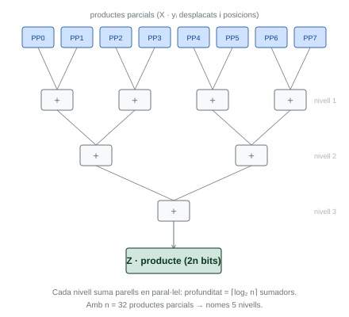
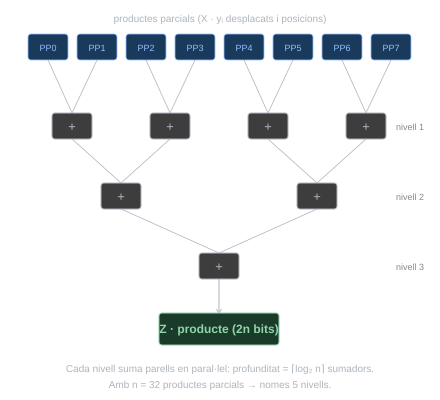
4.3.3 Instruccions de multiplicació (extensió M)
Com s’ha vist a Secció 3.1.4, slli permet multiplicar per potències de 2 de manera eficient; és la solució adequada per escalar índexs de vectors quan la mida de l’element és 1, 2, 4 o 8 bytes (EC 3.3). Per al cas general, però, cal una instrucció de multiplicació d’enters: per exemple, per accedir a un element qualsevol d’una matriu, cal calcular i*NC, on el nombre de columnes NC no té per què ser una potència de 2.
Aquí és on es manifesta la potència del disseny modular de RISC-V (Secció 2.1.3): l’extensió M (Secció 2.1.5) afegeix instruccions de multiplicació i divisió entera per maquinari. Per activar-la, cal afegir m al paràmetre -march del compilador: -march=rv32im.
| Mnemònic | Operands | Operació | Nom | Tipus |
|---|---|---|---|---|
mul |
rd, rs1, rs2 |
\(rd \leftarrow (rs1 \times rs2)[31{:}0]\) | Multiply | R |
mulh |
rd, rs1, rs2 |
\(rd \leftarrow (rs1 \times rs2)[63{:}32]\) (enters) | Multiply High | R |
mulhu |
rd, rs1, rs2 |
\(rd \leftarrow (rs1 \times rs2)[63{:}32]\) (naturals) | Multiply High Unsigned | R |
mulhsu |
rd, rs1, rs2 |
\(rd \leftarrow (rs1 \times rs2)[63{:}32]\) (rs1 enter, rs2 natural) |
Multiply High Signed-Unsigned | R |
mul
mul i mulh
mul i mulh (o mulhu) són instruccions independents: cadascuna calcula internament la multiplicació completa de 64 bits i en retorna una meitat. Per evitar fer el càlcul dues vegades, l’especificació de RISC-V recomana als compiladors que, quan calguin les dues meitats del resultat, posin les dues instruccions consecutivament amb els mateixos operands; això permet al maquinari detectar el patró i fusionar-les en una sola multiplicació de 64 bits.
4.3.4 Sobreeiximent en la multiplicació
El producte de dos enters de 32 bits pot tenir fins a 64 bits de resultat exacte. mul retorna només els 32 bits de menys pes, que corresponen al resultat truncat; si el resultat exacte no és representable amb 32 bits, es produeix sobreeiximent i el valor retornat per mul no és correcte.
Per obtenir el resultat exacte de 64 bits cal combinar mul amb mulh (enters amb signe) o mulhu (naturals sense signe), que retornen els 32 bits de més pes. A partir d’aquests es pot detectar el sobreeiximent:
- En naturals (
mulhu): hi ha sobreeiximent simulhuretorna un valor diferent de zero. - En enters (
mulh): hi ha sobreeiximent si el resultat demulhno és l’extensió de signe del resultat demul.
C
En RV32IM, per obtenir el producte exacte de 64 bits i detectar sobreeiximent, suposant que a, b i s ocupen t0, t1 i t2:
mul no distingeix el signe dels operands
A Secció 4.3.1 s’ha presentat l’algorisme general per a enters: treballar amb els valors absoluts i ajustar el signe al final. Estrictament, però, per a la part baixa del resultat aquest ajust no és necessari: el producte mòdul \(2^n\) (els \(n\) bits de menys pes) és idèntic tant si els operands s’interpreten com a naturals com si s’interpreten com a enters en Ca2. Per això RV32M té una única instrucció mul per als bits \([31{:}0]\), vàlida per a tots dos casos. En canvi, la part alta (\([63{:}32]\)) sí que depèn de la interpretació dels operands, i per això existeixen mulh, mulhu i mulhsu.
4.4 Divisió entera
4.4.1 Algorisme
L’algorisme de divisió entera es basa en la divisió de naturals. Per a enters amb signe, es treballa amb els valors absoluts i s’ajusta el signe dels resultats al final.
L’algorisme per calcular el quocient \(q = x \div y\) i el residu \(r = x \bmod y\) és:
- Calcular els valors absoluts \(|x|\) i \(|y|\).
- Dividir els valors absoluts (divisió de naturals), obtenint \(q\) i \(r\).
- Si els operands tenen signes diferents, canviar el signe del quocient.
- Si el dividend és negatiu, canviar el signe del residu.
La divisió del dividend \(D\) entre el divisor \(d\) consisteix a trobar el quocient \(q\) i el residu \(r\) naturals tals que \(D = d \cdot q + r\), amb \(0 \leq r < d\).
L’algorisme treballa els bits del quocient de més pes a menys pes. A cada pas \(i\) (de \(n-1\) a \(0\)), es compara el dividend parcial amb el divisor desplaçat \(i\) posicions a l’esquerra: si el dividend parcial és major o igual, el bit \(q_i = 1\) i el divisor desplaçat es resta del dividend parcial; si no, \(q_i = 0\) i el dividend parcial no canvia.
Dividir \(D = 1011_2\) (\(11_{10}\)) entre \(d = 0010_2\) (\(2_{10}\)):
| Pas | Divisor desplaçat | Comparació | \(q_i\) | Residu parcial |
|---|---|---|---|---|
| inicial | — | — | — | 1011 |
| 1 (\(i=3\)) | 0010000 |
1011 ≥ 0010000? No |
0 | 1011 |
| 2 (\(i=2\)) | 001000 |
1011 ≥ 001000? Sí |
1 | 0011 |
| 3 (\(i=1\)) | 00100 |
0011 ≥ 00100? No |
0 | 0011 |
| 4 (\(i=0\)) | 0010 |
0011 ≥ 0010? Sí |
1 | 0001 |
Quocient: \(q = 0101_2 = 5_{10}\), residu: \(r = 0001_2 = 1_{10}\) ✓
4.4.2 Circuit seqüencial de divisió
El circuit implementa l’algorisme anterior amb tres registres:
- R (\(2n\) bits): dividend/residu. S’inicialitza amb \(x\) a la part baixa i zeros a la part alta.
- D (\(2n\) bits): divisor. S’inicialitza amb \(y\) a la part alta i zeros a la part baixa. Es desplaça una posició a la dreta a cada iteració.
- Q (\(n\) bits): quocient. S’inicialitza a zero.
Per evitar guardar el dividend original quan la comparació falla, s’utilitza l’algorisme amb restauració: es resta sempre el divisor del dividend parcial (la comparació es fa com una resta); si el resultat és negatiu (bit de signe \(R_{2n-1} = 1\)), el bit de quocient és 0 i es restaura el dividend sumant-hi de nou el divisor; si és positiu o zero, el bit és 1.
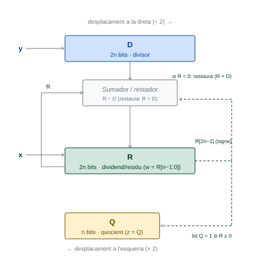
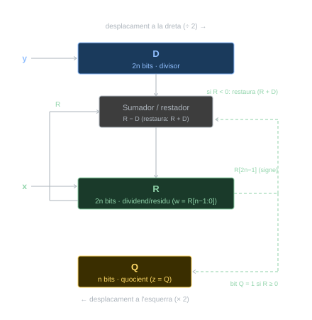
Algorisme 4.2 Divisió seqüencial de naturals de \(n\) bits amb algorisme de restauració, on \(x\) dividend, \(y\) divisor, \(z\) el quocient i \(w\) el residu.
Dividir \(x = 1011_2\) entre \(y = 0010_2\):
| Iteració | R (dividend/residu) | D (divisor) | Q (quocient) |
|---|---|---|---|
| inicial | 0000 1011 |
0010 0000 |
0000 |
| 1 | 0000 1011 |
0001 0000 |
0000 |
| 2 | 0000 0011 |
0000 1000 |
0001 |
| 3 | 0000 0011 |
0000 0100 |
0010 |
| 4 | 0000 0001 |
0000 0010 |
0101 |
Quocient: \(Q = 0101_2 = 5_{10}\), residu: \(R[3:0] = 0001_2 = 1_{10}\) ✓
4.4.3 Instruccions de divisió entera a RV32IM
L’extensió M proporciona quatre instruccions de divisió entera:
| Mnemònic | Operands | Operació | Nom | Tipus |
|---|---|---|---|---|
div |
rd, rs1, rs2 |
\(rd \leftarrow rs1 \div rs2\) (enters) | Divide | R |
divu |
rd, rs1, rs2 |
\(rd \leftarrow rs1 \div rs2\) (naturals) | Divide Unsigned | R |
rem |
rd, rs1, rs2 |
\(rd \leftarrow rs1 \bmod rs2\) (enters) | Remainder | R |
remu |
rd, rs1, rs2 |
\(rd \leftarrow rs1 \bmod rs2\) (naturals) | Remainder Unsigned | R |
div i rem operen amb enters amb signe; divu i remu operen amb naturals. div i divu escriuen el quocient a rd; rem i remu escriuen el residu.
Les instruccions div i rem segueixen la semàntica de C: el residu té el mateix signe que el dividend, i \(|r| < |d|\). Aquesta és la mateixa semàntica que s’obté dividint els valors absoluts i ajustant el signe (algorisme de la Secció 4.4).
Això difereix de la divisió euclidiana, on el residu és sempre no negatiu. Vegeu la diferència amb sra a Essencial 3.2.
4.4.3.1 Casos especials
- Divisor zero: el resultat és indefinit. RISC-V no genera excepció; per convenció,
divretorna \(-1\) iremretorna el dividend. - Sobreeiximent en enters: l’únic cas possible és \(x = -2^{31}\), \(y = -1\), ja que el resultat exacte \(2^{31}\) no és representable en Ca2 amb 32 bits. Per convenció,
divretorna \(-2^{31}\) iremretorna 0.
4.4.4 Divisió per potències de 2
Com s’ha vist a Essencial 3.2, la instrucció sra calcula el quocient de la divisió d’un enter per una potència de 2, però amb la semàntica de la divisió euclidiana (residu sempre no negatiu), que difereix de div quan el dividend és negatiu i la divisió no és exacta.
En C, l’operador / entre enters es tradueix amb div (no amb sra), llevat que el compilador pugui garantir que el dividend és no negatiu.
4.5 Matrius
Amb mul disponible, ja és possible calcular adreces arbitràries dins d’estructures de dades multidimensionals. Una matriu és una agrupació multidimensional d’elements del mateix tipus, identificats per un índex per cada dimensió. Les matrius de dues dimensions es representen habitualment com una taula de NF files i NC columnes:
\[ \begin{pmatrix} \texttt{mat[0][0]} & \texttt{mat[0][1]} & \cdots & \texttt{mat[0][NC-1]} \\ \texttt{mat[1][0]} & \texttt{mat[1][1]} & \cdots & \texttt{mat[1][NC-1]} \\ \vdots & \vdots & \ddots & \vdots \\ \texttt{mat[NF-1][0]} & \texttt{mat[NF-1][1]} & \cdots & \texttt{mat[NF-1][NC-1]} \end{pmatrix} \]
4.5.1 Declaració i emmagatzematge
En C, una matriu global de NF files i NC columnes d’elements int es declara així:
Els elements s’emmagatzemen en posicions consecutives de memòria per files: primer tots els de la fila 0, després els de la fila 1, etc. Aquest és un conveni arbitrari de C (en Fortran, les matrius s’emmagatzemen per columnes).
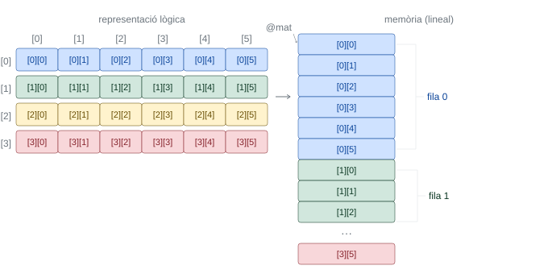
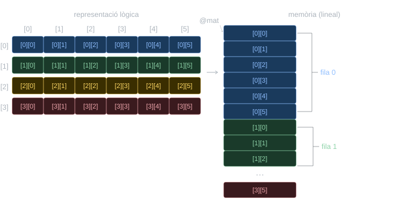
mat[4][6] en memòria per files.
En RV32I, la declaració equivalent és:
A EC, es recomana definir les dimensions de la matriu (NF, NC) com a constants (#define en C, .eqv en assemblador) per facilitar la lectura del codi, el càlcul d’adreces i l’aplicació d’optimitzacions.
4.5.2 Accés aleatori
L’accés aleatori és la capacitat d’accedir directament a qualsevol element d’una estructura de dades en temps constant \(\mathcal{O}(1)\), independentment de la seva posició. Això és possible perquè tots els elements tenen una mida fixa \(T\) i estan disposats de forma contigua a la memòria; per tant, l’adreça de qualsevol d’aquests es pot calcular explícitament mitjançant una fórmula aritmètica.
Presenten aquesta propietat les estructures de dades que s’emmagatzemen com a blocs compactes d’elements, com ara els vectors, les matrius i les estructures de dades complexes (struct en C). En canvi, les estructures de dades dinàmiques on els elements estan dispersos, com les llistes enllaçades, els arbres o els grafs, no permeten l’accés aleatori i requereixen un accés seqüencial.
Per accedir a l’element mat[i][j] d’una matriu d’elements de mida \(T\), cal tenir en compte que la matriu s’emmagatzema per files: per arribar a la fila i cal saltar i files senceres de NC elements, i dins la fila cal avançar j elements més:
\[@\texttt{mat[i][j]} = @\texttt{mat[0][0]} + (i \cdot \texttt{NC} + j) \cdot T \tag{4.3}\]
L’Equació 4.3 és la generalització de l’Equació 2.1 (NC > 1 vs. NC = 1).
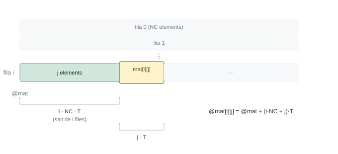
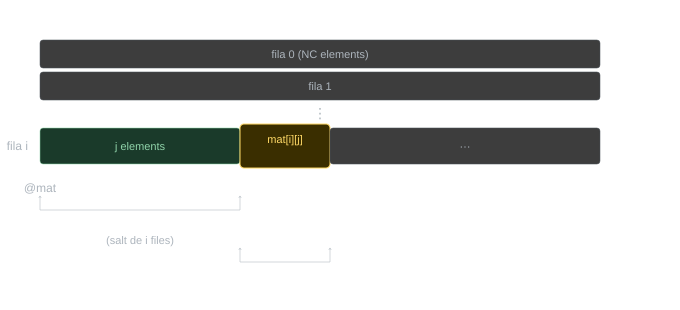
mat[i][j].
A EC, en els càlculs d’adreces amb multiplicacions per constants que no són potències de 2, s’usa mul. Els 32 bits de més pes s’ignoren perquè qualsevol adreça vàlida en RV32I cap en 32 bits.
mat[i][j] — índexs variables
Suposant que i, j, k ocupen t0, t1, t2:
mat[i][j] — columna constant
Si la columna j és una constant (aquí j = 5):
El terme 5*T és un invariant que el compilador pot incorporar directament a l’adreça base:
mat[i][j] — fila constant
4.6 Optimitzacions de bucle
Els bucles que recorren vectors i matrius sovint admeten optimitzacions que redueixen el nombre d’instruccions executades per iteració. Com s’ha vist a Secció 2.8.5.1, l’extracció d’invariants és un prerequisit implícit que cal aplicar sempre abans de qualsevol altra optimització.
Les tres optimitzacions que es presenten a continuació s’apliquen de manera progressiva sobre el mateix bucle: cada una parteix del resultat de l’anterior.
4.6.1 Optimització #1 — Accés seqüencial
Quan un bucle recorre els elements d’un vector o matriu i la distància en bytes entre les adreces de dos elements consecutius del recorregut és constant, es pot aplicar l’accés seqüencial. Aquesta distància constant s’anomena stride:
\[\text{stride} = @X_{i+1} - @X_i = \text{constant} \tag{4.4}\]
En lloc de calcular l’adreça de cada element a partir de l’adreça base i l’índex, es manté un punter que s’actualitza sumant-li l’stride a cada iteració:
\[@X_{i+1} = @X_i + \text{stride} \tag{4.5}\]
Això elimina el producte i*T del càlcul d’adreça i el substitueix per una suma constant.
Mètode:
- Calcular l’adreça del primer element del recorregut i inicialitzar un punter
pamb aquesta adreça. - Calcular l’stride restant les adreces de dos elements consecutius.
- A cada iteració: accedir a l’element desreferenciant
p, i sumar-li l’stride per avançar al següent.
Considerem la funció que posa a zero una fila d’una matriu:
Versió sense optimitzar (accés aleatori):
RV32IM
# a0 = @mat, a1 = fila
li t0, NC*4 # invariant: NC*4
mul t1, a1, t0 # fila*NC*4
add t2, a0, t1 # invariant: @mat[fila][0]
li t0, NC # invariant: NC (comptador)
mv t1, zero # j = 0
for:
bge t1, t0, fifor # [ctrl]
slli t3, t1, 2 # [ctrl] j*4
add t4, t2, t3 # [ctrl] @mat[fila][j]
sw zero, 0(t4) # mat[fila][j] = 0
addi t1, t1, 1 # [ctrl] j++
j for # [ctrl]
fifor:
retLa infraestructura de control ocupa 5 instruccions per iteració.
Versió optimitzada (accés seqüencial):
L’stride és: \(@\texttt{mat[fila][j+1]} - @\texttt{mat[fila][j]} = 4\)
RV32IM
# a0 = @mat, a1 = fila
li t0, NC*4 # invariant: NC*4
mul t1, a1, t0 # fila*NC*4
add t3, a0, t1 # p <- @mat[fila][0]
li t0, NC # invariant: NC (comptador)
mv t1, zero # j = 0
for:
bge t1, t0, fifor # [ctrl]
sw zero, 0(t3) # mat[fila][j] = 0
addi t3, t3, 4 # [ctrl] p += stride
addi t1, t1, 1 # [ctrl] j++
j for # [ctrl]
fifor:
retLa infraestructura de control queda en 4 instruccions per iteració. Aplicant les optimitzacions #2 i #3 es reduirà fins a 2.
4.6.2 Optimització #2 — Avaluació de la condició al final
En un bucle while, la condició s’avalua abans de cada iteració, cosa que implica un salt incondicional al final del cos per tornar a avaluar-la. Si es transforma en un do-while, la condició s’avalua al final, i s’elimina el salt incondicional.
No obstant això, cal garantir la semàntica del while original en el cas de zero iteracions: si el bucle pot no executar-se cap vegada, cal afegir una comprovació inicial abans d’entrar al do-while.
Partint de la versió amb accés seqüencial (#1):
RV32IM
# a0 = @mat, a1 = fila
li t0, NC*4
mul t1, a1, t0
add t3, a0, t1 # p <- @mat[fila][0]
li t0, NC
mv t1, zero # j = 0
bge t1, t0, fifor # comprovació inicial (0 iteracions)
for:
sw zero, 0(t3) # mat[fila][j] = 0
addi t3, t3, 4 # [ctrl] p += stride
addi t1, t1, 1 # [ctrl] j++
blt t1, t0, for # [ctrl] salta si j < NC
fifor:
retLa infraestructura de control queda en 3 instruccions per iteració. El salt incondicional j ha desaparegut, substituït pel salt condicional al final blt.
4.6.3 Optimització #3 — Eliminació de la variable d’inducció
Després d’aplicar l’accés seqüencial (#1), el punter p recorre tots els elements del bucle. Si la variable d’inducció j ja no s’usa per a res més que controlar el bucle, es pot eliminar: en lloc de comparar j amb NC, es compara p directament amb l’adreça de l’element posterior al darrer.
Com que es comparen adreces (naturals sense signe), cal usar bgeu / bltu en lloc de bge / blt.
Partint de la versió amb #1 i #2:
RV32IM
# a0 = @mat, a1 = fila
li t0, NC*4
mul t1, a1, t0
add t3, a0, t1 # p <- @mat[fila][0]
add t4, t3, t0 # t4 <- @mat[fila][NC] (sentinella)
bgeu t3, t4, fifor # comprovació inicial (0 iteracions)
for:
sw zero, 0(t3) # mat[fila][j] = 0
addi t3, t3, 4 # [ctrl] p += stride
bltu t3, t4, for # [ctrl] salta si p < sentinella
fifor:
retLa infraestructura de control queda en 2 instruccions per iteració. La variable j ha desaparegut completament: el bucle es controla únicament amb el punter t3 i la sentinella t4.
4.6.4 Recorreguts de matrius amb accés seqüencial
L’stride depèn del patró de recorregut, no de l’estructura de la matriu. Per a una matriu d’elements de mida \(T\) i NC columnes:
| Recorregut | Stride |
|---|---|
| Una fila | \(T\) |
| Una columna | \(\texttt{NC} \cdot T\) |
| Diagonal principal | \((\texttt{NC} + 1) \cdot T\) |
| Diagonal secundària | \((\texttt{NC} - 1) \cdot T\) |
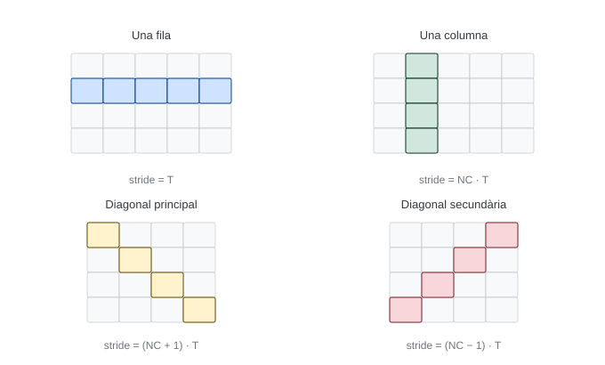
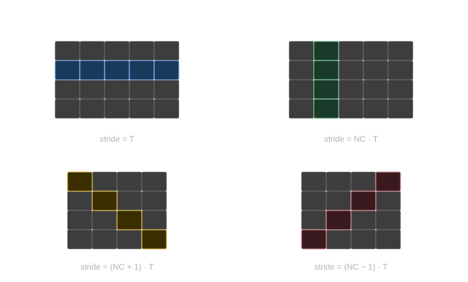
mat[4][5] a dalt i mat[4][4] a baix, i els strides corresponents.
sumacolumna — accés aleatori
C
L’adreça de mat[i][col] és (amb \(T = 2\)):
\[@\texttt{mat[i][col]} = @\texttt{mat} + (i \cdot \texttt{NC} + \texttt{col}) \cdot 2\]
RV32IM
# a0 = @mat, a1 = col, a2 = nfiles
mv t0, zero # suma = 0
mv t1, zero # i = 0
li t2, NC*2 # invariant: NC*2
slli t3, a1, 1 # invariant: col*2
add t3, t3, a0 # invariant: @mat + col*2
for:
bge t1, a2, fifor # [ctrl]
mul t4, t1, t2 # [ctrl] i*NC*2
add t5, t3, t4 # [ctrl] @mat + col*2 + i*NC*2
lh t5, 0(t5) # mat[i][col]
add t0, t0, t5 # suma += mat[i][col]
addi t1, t1, 1 # [ctrl] i++
j for # [ctrl]
fifor:
mv a0, t0 # retorn: suma
retsumacolumna — accés seqüencial (optimitzacions #1, #2 i #3)
L’stride per recórrer una columna és \(\texttt{NC} \cdot T = \texttt{NC} \cdot 2\).
Com que, en general, NC no té per què ser potència de 2, l’stride NC*2 tampoc ho és: el desplaçament fins a la sentinella (nfiles·NC*2) s’ha de calcular amb mul, ja que no es pot obtenir amb slli.
RV32IM
# a0 = @mat, a1 = col, a2 = nfiles
mv t0, zero # suma = 0
slli t1, a1, 1 # col*2
add t3, a0, t1 # p <- @mat[0][col]
li t1, NC*2 # stride = NC*2
mul t2, a2, t1 # nfiles*NC*2
add t4, t3, t2 # sentinella: @mat[nfiles][col]
bgeu t3, t4, fifor # comprovació inicial (0 iteracions)
for:
lh t5, 0(t3) # mat[i][col]
add t0, t0, t5 # suma += mat[i][col]
add t3, t3, t1 # [ctrl] p += stride
bltu t3, t4, for # [ctrl] salta si p < sentinella
fifor:
mv a0, t0 # retorn: suma
ret